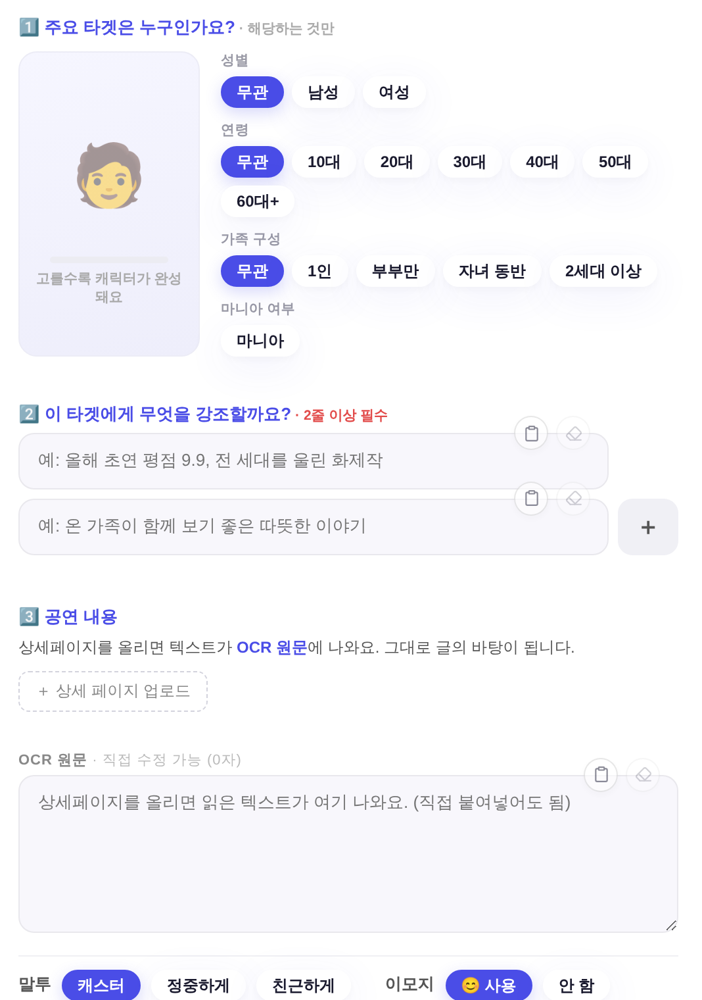
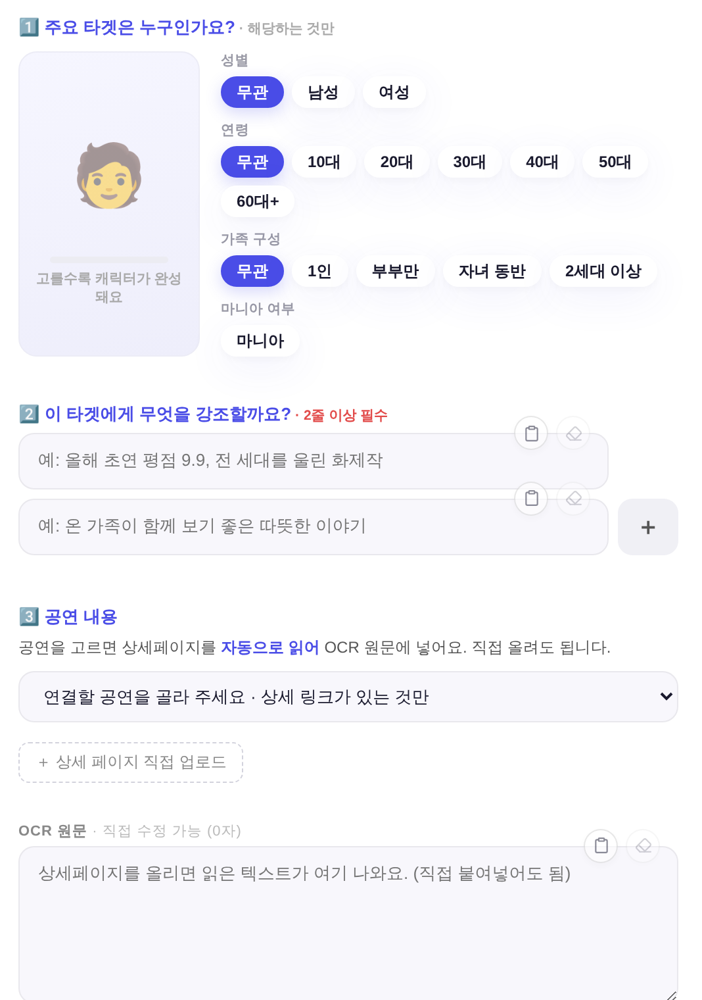
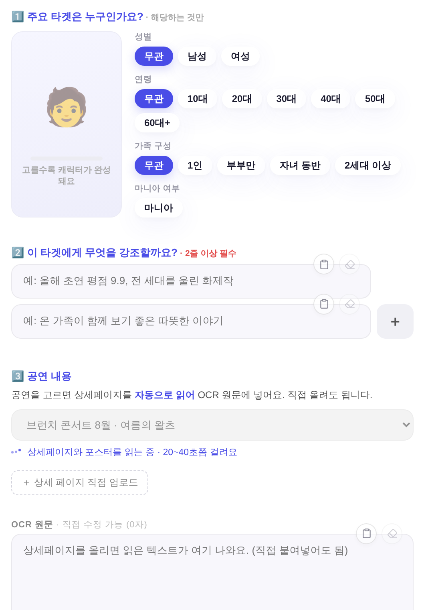
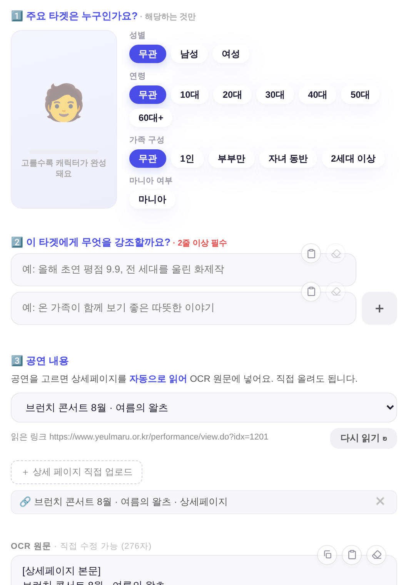

지시(운영자 260810): 「공연 내용 상세페이지 업로드있잖아. 이거 연결된 공연 고르도록 카카오채널 톡 만드는거 처럼 연결해줄래? 자동 ocr하도록」
화면 = QA 진입로(?qa=admin) 목데이터 · 실API·실데이터·PII 미접촉. 1500×1000 · deviceScaleFactor 2.
서버 왕복(/api/content/detail)만 샘플 응답으로 대체했고 화면 로직은 실제 코드 그대로 탔다.
전 = 상세페이지를 사람이 캡처해 올려야만 OCR 원문이 채워졌다. 후 = 그 공연의 상세 링크가 이미 프로그램 시트(K열)에 있으므로 공연을 고르면 서버가 링크를 열어 ①페이지 본문 ②포스터·상세 이미지 OCR을 읽어 넣는다. 업로드 버튼은 그대로 남는다(링크 없는 공연·현장 리플릿용).


버튼을 한 번 더 누르게 하지 않는다 — onchange에서 바로 읽는다. 로딩 표기는 정본(dots 픽토그램 + ~중).


| 축 | 재사용한 정본 | 신설 |
|---|---|---|
| 공연 목록 | _kmPerfs() — 카카오채널 톡과 한 벌(상세 링크가 있는 프로그램만) | 0 |
| 추출·OCR | Worker promoDetailGet(kkoFetchPage+kkoOcrImages+runExternalOcr) | 0 · 수집기·시크릿 신설 없음 |
| 캐시 | 같은 KV(pdext:v1:* · 24h maxAge) — 카카오에서 이미 읽은 링크면 재OCR 0으로 즉시 | 0 |
| 화면 부품 | .nb-input(select) · .nb-btn ghost · _ldHtml 로더 · 기존 파일 큐 행 | 0 · 새 CSS 클래스·새 raw hex 0 |
| 엔드포인트 | — | 1 · POST /api/content/detail(추출만 · LLM 미경유) |
| 확인 | 결과 |
|---|---|
| 상세 링크 없는 프로그램 제외 | 목록 3건 중 링크 있는 2건만 · 0건이면 「상세 링크가 있는 프로그램이 없어요」 |
| 고르면 자동 OCR | OCR 원문 = [상세페이지 본문]…[포스터·상세 이미지 OCR]… |
| 업로드 3장 상한 | 링크 항목은 상한에 안 센다(_nbOcrUploads()=0) |
| 다시 읽기 | fresh:1 전송 · 링크 항목은 한 칸 유지(중복 누적 0) |
| 공연 갈아타기 | 링크 항목이 새 공연으로 교체(누적 0) |
| 링크 항목 삭제 | 선택·링크·OCR 원문 함께 비움(같은 공연 다시 고를 수 있음) |
| 세대 가드 | 응답 도착 전 모달을 닫으면 결과가 새 상태를 안 건드림(빈 상태 유지) |
| pageerror | 0 |
| 게이트 | check_design·check_refs·check_modal_head·check_exchart·parity·bizchart·wizard·layout·modalhead 스모크 전건 PASS |